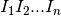
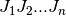
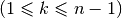
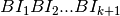
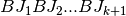
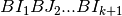

NPointsCrossover (script)¶
Se implementa el método que lleva por nombre N-Points Crossover (ó Cruza en N-Puntos).
Para comenzar, esta técnica está elaborada para usarse tanto por Representación Cromosómica
(véase Model/ChromosomalRepresentation) de tipo FloatPoint (ó de Punto Flotante) como
Binary (ó Binaria).
Su funcionamiento consiste en construir a los descendientes usando sub-bloques de cromosomas de cada
uno de los padres, determinados éstos por una cierta cantidad de puntos de corte, de ahí el nombre.
Aterrizando lo anterior de una manera concisa se tiene lo siguiente:
- Consideremos a los cromosomas de los padres Padre I: 
y Padre J: 
- Posteriormente se determinan aleatoriamente los puntos de corte, cabe mencionar que si los cromosomas son de tamaño n, pueden existir máximo n - 1 puntos. Supongamos que se crean k puntos  y por lo tanto cada cromosoma queda separado en k + 1 bloques.
De esta manera obtenemos: Padre I en bloques (BI): ; Padre J en bloques (BJ): .
- Finalmente cada hijo constará de la alternancia de bloques de manera secuencial comenzando por el bloque inicial de un padre determinado, dicho de otra forma, los hijos estarán constituidos de la siguiente manera:
- Para el hijo
: 
- Para el hijo
:
Sólo queda mencionar que hasta el cierre de este proyecto no existe una manera
transparente desde el View (ó Vista) de conocer, dada una representación Binaria
y un conjunto de variables de decisión y funciones objetivo, el número máximo de puntos
de corte permitidos para este procedimiento, sin embargo, una manera de mitigar esta situación
fue contemplar algún posible caso de error en esta sección y mandar un mensaje de error a la Vista
por si llegase a suceder algún desperfecto durante el proceso.
-
execute_crossover_technique(chromosome_a, chromosome_b, crossover_parameters)¶ Usando como base la información proporcionada anteriormente, se implementa el método conocido como N-Points Crossover (ó Cruza en ‘N’ Puntos).